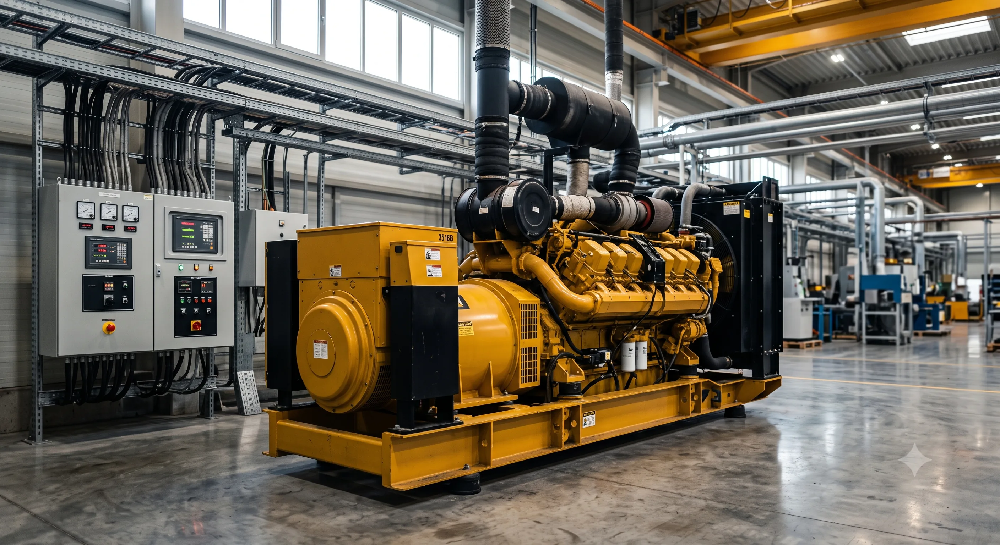

Elektrik kesintisinin üretimi durdurduğu, soğuk zinciri bozduğu, veri kaybına veya müşteri memnuniyetsizliğine yol açtığı işletmeler için jeneratör bir konfor değil iş sürekliliği yatırımıdır. Bu yatırımdan verim alabilmek için cihazın hem bugünkü hem de makul gelecekteki ihtiyaca uygun seçilmesi gerekir.
1. Jeneratörün Kullanım Amacını Belirleyin
İlk soru “kaç kVA?” değil, “ne zaman ve ne kadar süreyle çalışacak?” olmalıdır. Şebeke kesintilerinde devreye girecek yedek bir sistemle elektrik bulunmayan sahada her gün çalışacak ana güç sistemi farklı koşullarda boyutlandırılır.
| Kullanım tipi | Temel beklenti |
|---|---|
| Yedek güç | Şebeke kesildiğinde hızlı ve otomatik devreye girme. |
| Ana güç | Uzun çalışma süresi, yakıt ve bakım planı. |
| Pik destek | Belirli saatlerde ek kapasite veya yük yönetimi. |
| Mobil saha | Taşınabilirlik, hızlı bağlantı ve dayanıklılık. |
2. Ayrıntılı Bir Yük Listesi Hazırlayın
Panodaki ana sigortaya veya mevcut trafo gücüne bakarak jeneratör seçmek her zaman doğru sonuç vermez. Kesintide gerçekten çalışması gereken kritik yükler ayrı bir listede toplanmalıdır.
- Aydınlatma, bilgisayar ve elektronik cihazlar
- Klima, soğutma grubu ve havalandırma
- Pompa, kompresör, asansör ve elektrik motorları
- Üretim makinesi, kaynak ekipmanı ve rezistif yükler
- Yangın pompası, güvenlik, sunucu ve acil sistemler
Her cihaz için nominal güç, faz sayısı ve eş zamanlı kullanım bilgisi kaydedilmelidir. Kritik olmayan yükleri kesinti sırasında devre dışı bırakmak, daha verimli bir jeneratör seçimine imkân verebilir.
3. Motorların Kalkış Akımını Hesaba Katın
Elektrik motorları ilk kalkışta nominal akımın birkaç katına çıkabilir. Jeneratör toplam çalışma yükünü karşılasa bile büyük bir motor devreye girdiğinde voltaj düşebilir. Yıldız-üçgen yol verme, soft starter veya frekans konvertörü kullanımı bu hesabı değiştirir.
kVA hesabını internetteki tek satırlık formüllerle tamamlamak yerine, motorların devreye girme sırasını ve gerçek yük profilini teknik ekiple birlikte inceleyin.
4. Ne Çok Küçük Ne de Gereğinden Büyük
Küçük jeneratör aşırı yüklenir, voltaj ve frekans kararlılığı bozulur, cihaz korumaya geçebilir. Gereğinden çok büyük dizel jeneratör ise uzun süre düşük yükte çalışırsa verimsizlik ve motor sorunları yaşayabilir. Doğru emniyet payı; gelecekteki kapasite artışını karşılayacak fakat cihazı sürekli düşük yükte bırakmayacak şekilde belirlenmelidir.
5. Otomatik Transfer Sistemini Planlayın
İşletmenin insan müdahalesi olmadan enerjiye dönmesi isteniyorsa otomatik transfer panosu gerekir. Sistem şebekeyi izler, kesintide jeneratörü çalıştırır ve uygun değerlere ulaştığında yükü aktarır. Şebeke geri geldiğinde belirlenen bekleme süreleriyle normal beslemeye döner.
Transfer panosunun akım değeri, kısa devre dayanımı, mekanik-elektrik kilitlemesi ve mevcut ana dağıtım panosuyla uyumu proje aşamasında ele alınmalıdır.
6. Kabin, Havalandırma ve Ses Koşullarını Belirleyin
Dış ortamda kullanılacak jeneratör için hava koşullarına uygun kabin ve güvenli zemin gerekir. İç mekânda ise soğutma havası girişi, sıcak hava atışı ve egzoz sistemi projelendirilmelidir. Mersin'in yaz sıcaklarında yetersiz havalandırma cihazın hararet yapmasına ve kapasite kaybetmesine yol açabilir.
Otel, hastane, ofis ve konut yakınındaki işletmelerde ses seviyesi de önceden değerlendirilmelidir. Kabin, egzoz susturucusu, titreşim takozları ve doğru yerleşim birlikte ele alınır.
7. Yakıt Deposu ve Çalışma Süresini Hesaplayın
İşletmenin hedeflediği kesintisiz çalışma süresi yakıt deposu kapasitesini belirler. Tüketim sabit değildir; yük oranına, motor verimine ve ortam koşullarına göre değişir. Uzun kesintilere hazırlanan tesislerde ana depo, günlük depo, otomatik dolum ve sızıntı güvenliği birlikte planlanabilir.
8. Servis ve Yedek Parça Desteğini Seçimin Parçası Yapın
Jeneratörün teknik özellikleri kadar kurulum sonrası destek de önemlidir. Mersin'de ulaşılabilir bir servis ekibi; periyodik bakım, arıza tespiti, yedek parça ve acil müdahale süreçlerini kolaylaştırır. Teklifleri karşılaştırırken garanti kapsamını, devreye alma hizmetini ve bakım planını sorun.
Satın Almadan Önce Keşif Yapın
İyi bir keşif; yük listesi, ana pano, kablo güzergâhı, yerleşim alanı, egzoz, havalandırma, yakıt ve gürültü koşullarını birlikte inceler. Bu çalışma, yanlış kapasite seçimini ve sonradan ortaya çıkacak ek maliyetleri azaltır.
Projenizin yük listesini ve kurulum alanını paylaşarak Mersin jeneratör satış hizmetimizi inceleyebilir ve teknik teklif alabilirsiniz.